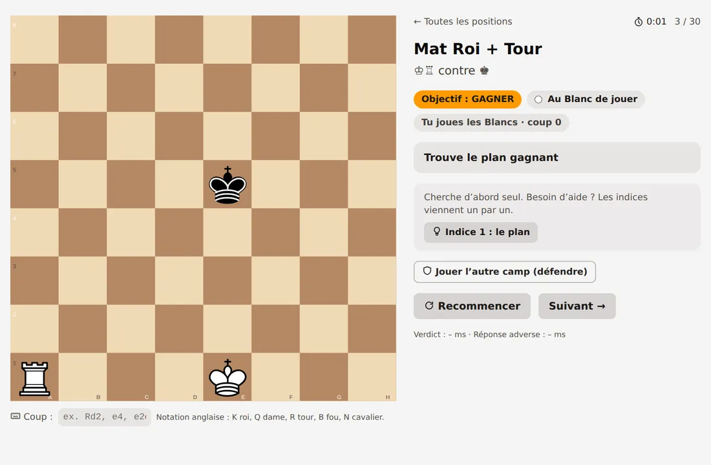

Les finales d’échecs, enfin travaillées comme il faut.
Des milliers de finales tirées de parties réelles, jugées coup par coup par la table de finales : tu sais tout de suite si ton coup gagne, annule ou perd — et pourquoi.
Commencer gratuitementSans inscription, sans publicité, sans cookie. Fonctionne sur téléphone, tablette et ordinateur, même hors ligne.

Trois façons de jouer
Storm
3 minutes pour résoudre un maximum de finales. Chaque réussite ajoute du temps et fait monter la difficulté.
Streak
Sans chrono : la difficulté monte à chaque réussite, la série s’arrête à la première erreur.
Entraînement
30 positions de référence (Lucena, Philidor, opposition…), leçons guidées, technique jusqu’au mat, analyse libre.
Progresser pour de bon
- Un Elo par type de finale, et ton point faible repéré automatiquement.
- Les positions ratées reviennent le lendemain, puis à 3, 7 et 14 jours, jusqu’à être acquises.
- Tes types d’erreurs (gain laissé échapper, pat, méthode trop lente…) avec un conseil ciblé.
- Un chrono par exercice, un puzzle du jour et un défi de la semaine commun à tous.
Pour les clubs et les entraîneurs
Ta base d’exercices
Importe tes PGN : tes élèves les jouent en Storm et en Streak, du plus facile au plus difficile, par thème.
Suivi des élèves
Scores, réussite, temps médian, exercices les plus ratés — pour les élèves qui l’acceptent, sous un pseudo.
Séries par lien
Quelques positions choisies, envoyées par lien ou imprimées ; grand affichage pour projeter au club.
Gratuit et respectueux
- Aucune publicité, aucune revente de données, aucun cookie.
- Sans compte, tout reste sur ton appareil. Un compte gratuit permet de retrouver ta progression partout.
- Logiciel libre (licence GPL v3), positions issues de la base ouverte de Lichess (CC0).